📖 Manga
Tu estómago se estira como el de Luffy: lo que te frena es el cerebro.
One Piece nº 01

El manga, la figura o el experimento del que hablo. Busca el tuyo.
Tu estómago se estira como el de Luffy: lo que te frena es el cerebro.
One Piece nº 01

Ahora mismo, sin moverte, sueltas tanta energía como una bombilla.
Dragon Ball Ultimate nº 01

¿Puedes meter a alguien en un genjutsu como Itachi? Con una mano de goma y dos pinceles, sí.
Funko Itachi Uchiha

Mete la cara en agua fría y tu corazón late más despacio: es tu propio modo agua.
Funko Tanjiro

Frota un globo en tu pelo y cada pelo se aparta de los demás. No es magia: es la misma chispa del pomo.
Peluca Super Saiyan Funidelia

Hay quien va en bici sin ver nada, guiándose solo por el eco de sus chasquidos.
One Piece nº 01
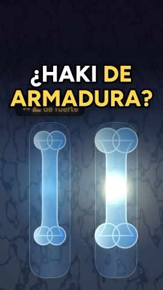
Tus huesos ya hacen el Haki de armadura: se vuelven más gruesos justo donde les pegas.
Funko Monkey D. Luffy

¿Te quedarías calvo entrenando como Saitama? Las flexiones no tienen la culpa: el pelo se cae tres meses después del golpe.
One Punch-Man 01
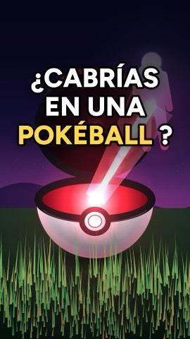
¿Cabrías en una Pokéball? Sí, y sin encogerte: toda la humanidad cabe en un terrón de azúcar.
Pokémon Clip 'N' Go Charmander y Poké Ball

¿Quieres abrir las Ocho Puertas como Gai? Ya echas su vapor cada vez que entrenas con frío.
Funko Might Guy Ocho Puertas

Nunca has tocado tu móvil: tus átomos se frenan antes, como el Infinito de Gojo.
Jujutsu Kaisen 01
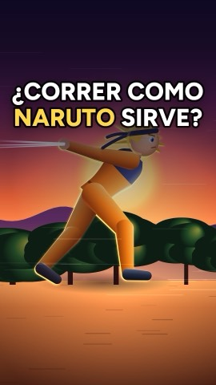
¿Correr como Naruto te hace más rápido? Lo midieron con cronómetro y la diferencia es ridícula.
Bandana de Konoha
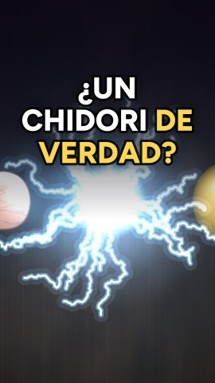
¿Quieres hacer un Chidori como Sasuke? Ya lo haces cada vez que te quitas un jersey a oscuras.
Bola de plasma

Mientras ves este reel te mueren casi 4 millones de células cada segundo, y no lo notas.
Cells at Work! vol. 1
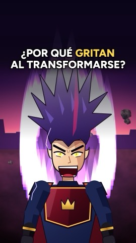
¿Por qué en Dragon Ball gritan al transformarse? Porque gritando aprietas un 7 % más fuerte, y tú ya lo haces.
Dragon Ball Ultimate nº 01
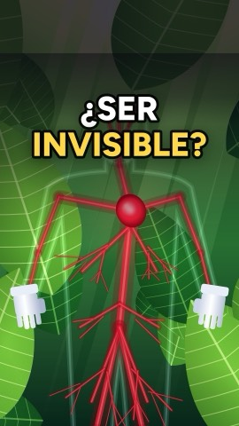
Hay una rana que se vuelve casi invisible al dormirse: esconde su sangre.
My Hero Academia nº 01

Nueve de cada diez personas a las que les cae un rayo sobreviven.
Guardianes de la Noche 01
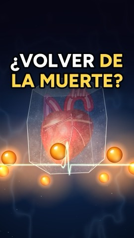
¿Volver de la muerte, como en Dragon Ball? Una mujer estuvo más de dos horas y media con el corazón parado, y volvió.
Set de las 7 Bolas de Dragón
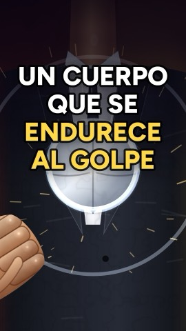
El Tekkai de Lucci existe, y no es músculo ni metal: es un líquido que tienes en la cocina.
Maizena
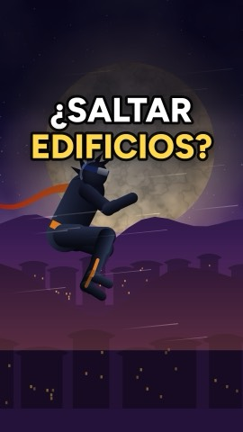
Una pulga salta 100 veces lo que mide, y aun así tú saltas más alto que ella.
Naruto nº 01
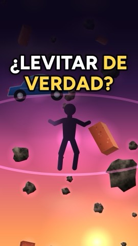
Un científico hizo flotar una rana viva con un imán. Años después ganó el Nobel (por otra cosa).
Maceta bonsái que levita con imanes
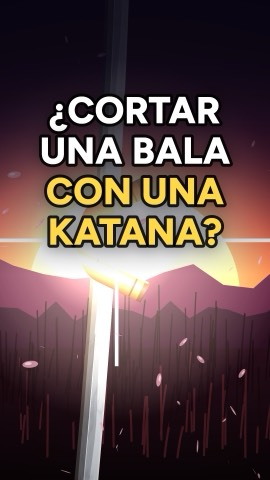
Goemon corta balas con la espada. Alguien lo hizo de verdad, y no gracias a la espada.
Lupin III 1
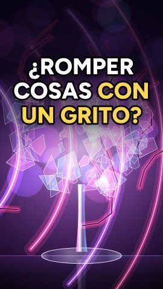
¿Romper algo con un grito, como Luffy con el Haki del Rey? Se puede, pero gritar más fuerte no sirve de nada.
One Piece nº 01
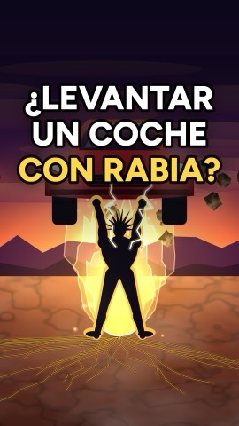
Gohan se enfada y levanta lo imposible. Y tú ya tienes esa fuerza: tu cerebro no te deja usarla.
Figura Gohan Bandai
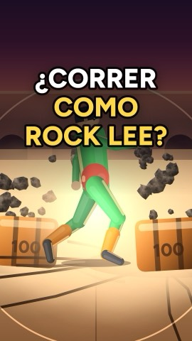
Usain Bolt llegó a 44,7 km/h, y la ciencia dice que podríamos pasar de 60.
Funko Rock Lee
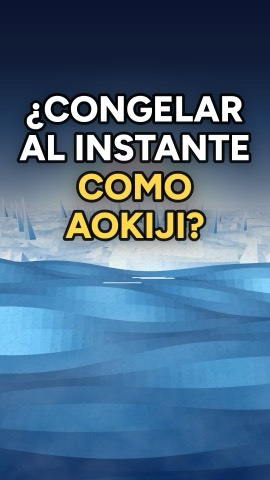
Aokiji congela el mar de un toque. Y tú puedes hacerlo con una botella de agua, sin más frío.
Figura Kuzan Aokiji Banpresto
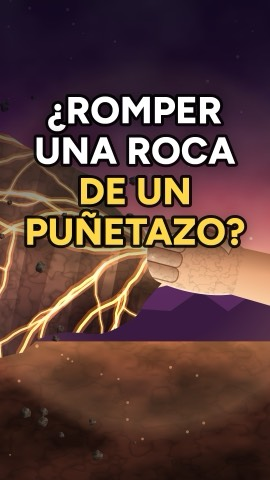
Tsunade parte rocas de un puñetazo. Tu hueso aguanta más de 40 veces más que el hormigón, y aun así te romperías la mano.
Naruto nº 01
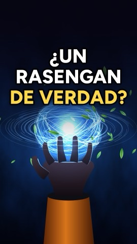
Naruto encierra aire girando en su mano. Un anillo de aire que gira apaga velas a metros.
Naruto nº 01
Sasuke escupe fuego. Los tragafuegos de verdad no lo sacan de la boca: el fuego nace en la antorcha.
Funko Sasuke Uchiha (Naruto Classic)
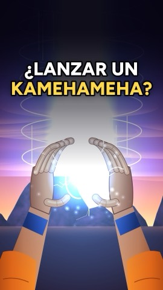
Goku junta energía en las manos. La física sabe hacerlo: se llama plasma.
Funko Goku con onda Kamehameha
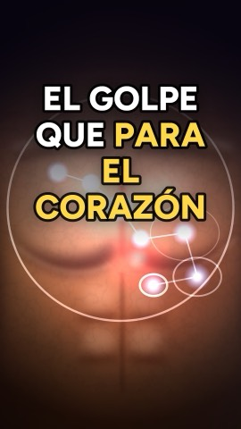
Un golpe flojo en el pecho puede parar un corazón, si cae en 15 milésimas exactas.
El cuerpo humano, Bill Bryson
Luffy bombea sangre con las piernas. Tu cuerpo también: tus gemelos son tu segundo corazón.
Calcetines de compresión Danish Endurance
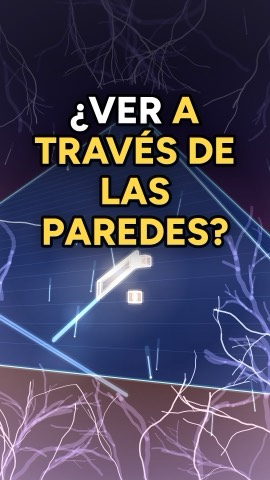
Neji ve a través de las paredes. Con partículas que caen del cielo encontraron un hueco escondido en la Gran Pirámide.
Naruto nº 01
Zoro corta acero de un tajo. Tu katana rebotaría, y no porque el acero sea más duro.
Funko Roronoa Zoro
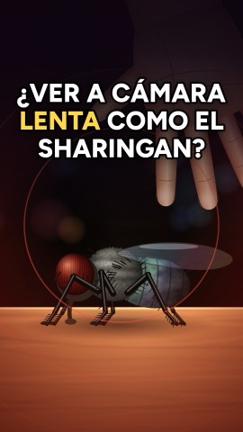
Una mosca ve 250 imágenes por segundo. Tú, 60: para ella, tu mano va a cámara lenta.
Funko Itachi Uchiha
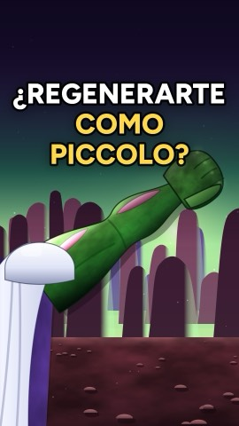
Piccolo se regenera un brazo. Tú no, pero tienes un órgano que vuelve a crecer aunque te quiten más de la mitad.
Figura Piccolo Tamashii DAIMA
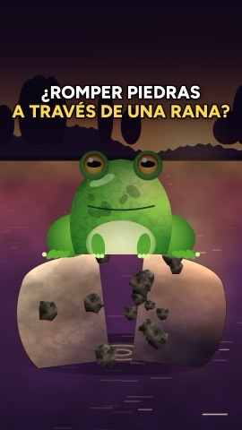
Zeppeli rompe una roca a través de una rana sin hacerle nada. Los médicos lo hacen cada día.
JoJo's Bizarre Adventure parte 1
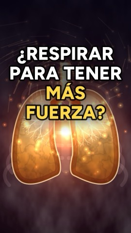
Tanjiro sopla calabazas para tener más fuerza. Tu sangre ya va al 98 % de oxígeno.
Pulsioxímetro de dedo
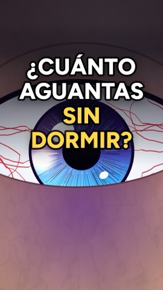
Lo que le pasa a tu cerebro si no duermes, día a día.
Antifaz para dormir MyHalos
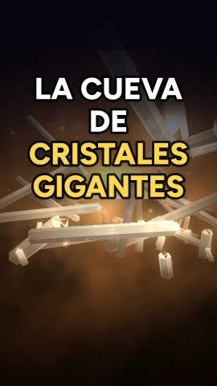
Existe una cueva con cristales de 11 metros, como en un mundo de fantasía.
Mega kit de cristales National Geographic
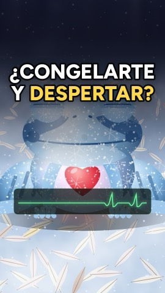
Una rana se congela cada invierno: el corazón se le para, y en primavera se va saltando.
¿Qué pasaría si...?
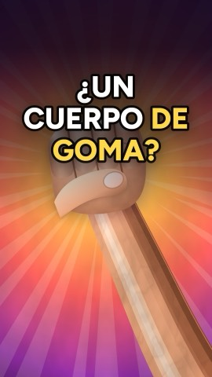
Hay un hombre que se estira la piel casi 16 cm, y no es por entrenar.
One Piece nº 01
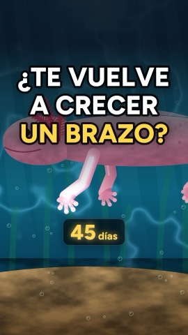
Hay un animal al que le vuelve a crecer la pata entera, sin una sola cicatriz.
Peluche ajolote Wild Republic
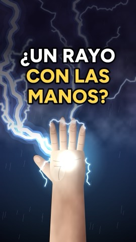
Tu cuerpo ya lo hace cuando te da calambre una puerta.
Bola de plasma
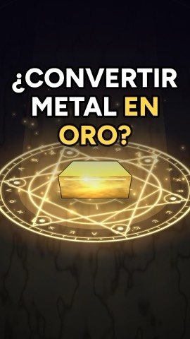
Los alquimistas nunca lo lograron. La física, sí: plomo convertido en oro de verdad.
Fullmetal Alchemist kanzenban 1
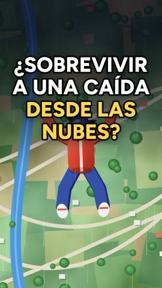
Hay una velocidad a la que dejas de acelerar, saltes desde donde saltes.
¿Qué pasaría si...?
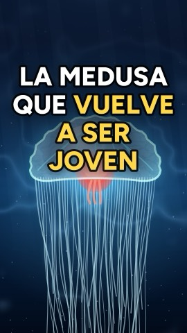
Hay una medusa que, cuando envejece, vuelve a ser joven.
Lámpara de medusas LED
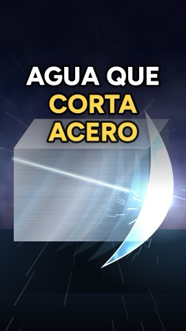
El agua corta acero. Solo hay que dispararla el doble de rápido que una bala.
Kärcher K2 hidrolimpiadora
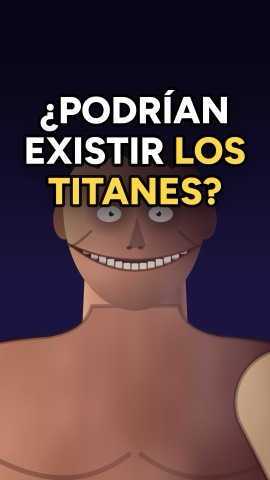
Un humano de 15 metros no daría miedo: se rompería con su propio peso.
Ataque a los Titanes, ed. integral 1
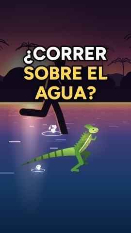
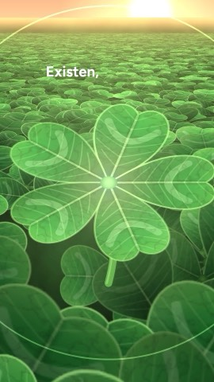
¿Los tréboles de cinco hojas de Black Clover existen de verdad? Sí, y hay uno con 63.
Black Clover 01
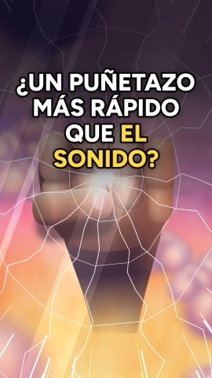
Saitama lo hace en cada capítulo. En la vida real, solo un látigo lo consigue.
One Punch-Man 01
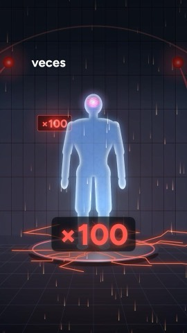
Goku entrenaba a 100 veces la gravedad. Tú no aguantarías ni unos segundos (y no por los músculos).
Chaleco lastrado PROIRON 10 kg
Ese aún no está… ¡pídemelo en los comentarios! 😤
¿Te perdiste alguno? Aquí los tienes.
Mete la cara en agua fría y tu corazón late más despacio: es tu propio modo agua.
▶Frota un globo en tu pelo y cada pelo se aparta de los demás. No es magia: es la misma chispa del pomo.
▶Hay quien va en bici sin ver nada, guiándose solo por el eco de sus chasquidos.
▶¿Te quedarías calvo entrenando como Saitama? Las flexiones no tienen la culpa: el pelo se cae tres meses después del golpe.
▶¿Quieres abrir las Ocho Puertas como Gai? Ya echas su vapor cada vez que entrenas con frío.
▶Nunca has tocado tu móvil: tus átomos se frenan antes, como el Infinito de Gojo.
▶Mientras ves este reel te mueren casi 4 millones de células cada segundo, y no lo notas.
▶¿Por qué en Dragon Ball gritan al transformarse? Porque gritando aprietas un 7 % más fuerte, y tú ya lo haces.
▶Nueve de cada diez personas a las que les cae un rayo sobreviven.
▶El Tekkai de Lucci existe, y no es músculo ni metal: es un líquido que tienes en la cocina.
Un vídeo nuevo casi cada día. Elige dónde verlo.
¿Se puede cortar acero como Zoro? ¿Caminar sobre el agua como Naruto? ¿Lanzar un Kamehameha? En ToAnime cojo lo que hacen tus personajes favoritos y te cuento qué pasaría si lo intentaras de verdad.
💬 ¿Quieres que explique algo de tu anime? Pídemelo en los comentarios de cualquier vídeo.